HDX Series
The HDX series from Dakota Digital is the latest in aftermarket automotive instrumentation technology. HDX takes personalization and usability to a whole new dimension while retaining your favorite features from the wildly popular VHX-series such as LED backlighting for the numbers, tick marks and dead-faced dash indicators (turn signals, high beam, check engine, cruise control engaged and parking brake). Illuminated needles and a lifetime warranty are still part of the deal as well. These features add up to a clean, easy to read instrument system in all conditions. Precision stepper motors provide accurate needle movement along with a full-sweep at key-on, and the needle hubs are black nickel plated spun-aluminum.
Available with your choice of black or silver alloy gauge-face styling, each HDX system allows the user to select their favorite illumination color for the gauge readings and needles, as well as the TFT message center displays. RGB LEDs are incorporated into the circuit boards for fully-adjustable display colors, allowing the user to personalize their instrument system to match nearly any vehicle theme.
Calibration and personal settings can be manipulated with the lighted, capacitive-touch buttons integrated into each HDX system, or the available Bluetooth app for Apple and Android devices. With the instrument system dialed in, including calibration of the speedometer and fuel gauge, the system can calculate your remaining fuel range, expressed in miles to empty. Every kit is supplied with an optional buzzer for feedback each time a button is pressed. Further, the buzzer can emit a warning tone for each reading at a user-defined set point to coincide with the dead-faced, red warning lights incorporated into the gauge faces.
Vehicle integration through a central control box has become a calling card for Dakota Digital, and the advantages are substantial. Most notably, installation is greatly simplified; two power (constant and switched) and one ground connection get things up and running, while vehicle-harness sourced signals and sensor inputs run cleanly to their respective terminal. Supplied, solid state sending units with weather-tight harnesses ensure trouble-free operation. The control box allows for easier service, a nicer-looking finished product, in addition to an abundance of technology packed into a vintage dashboard.

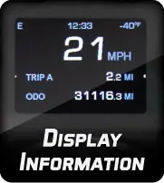

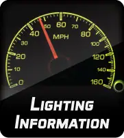

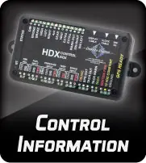

Pages: 1 2 [ next ]
Pages: 1 2 [ next ]
48 products
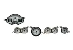
1953-57 Chevy Corvette HDX InstrumentsHDX-53C-VET$2,250.00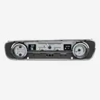
1964-65 Ford Falcon, Ranchero and Mustang HDX InstrumentsHDX-64F-FAL$1,625.00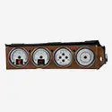
1970-74 Dodge Challenger and 1970-74 Plymouth Cuda with Rallye dashHDX-70D-CLG$1,825.00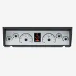
1977-90 Chevy Caprice/ Impala & 1984-86 Pontiac Parisienne HDX InstrumentsHDX-77C-CAP$1,625.00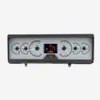
1978-88 Oldsmobile Cutlass HDX InstrumentsHDX-78o-CUT$1,625.00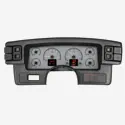
1987-89 Ford Mustang HDX InstrumentsHDX-87F-MUS$1,625.00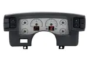
1990-93 Ford Mustang HDX InstrumentsHDX-90F-MUS$1,625.00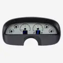
1994-96 Chevy Caprice/ Impala SS HDX InstrumentsHDX-94C-CAP$1,625.00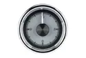
2-1/16" Round Universal HDX ClockHLC-2162$245.00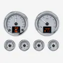
HDX-2024: Universal 6 Gauge Round, Analog HDX InstrumentsHDX-2024$1,625.00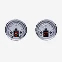
HDX-2014: Universal Dual 5.4" Round, Analog HDX InstrumentsHDX-2014$1,625.00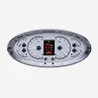
HDX-2017: Universal 5.75" x 12" Elliptical, Analog HDX InstrumentsHDX-2017$1,625.00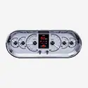
HDX-2018: Universal 4.4" x 11.4" Rounded Rectangle, Analog HDX InstrumentsHDX-2018$1,625.00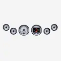
HDX-2060: Universal 6 Gauge Round, Analog HDX InstrumentsHDX-2060$1,625.00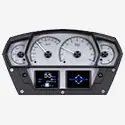
HDX-2100: Universal Competition Analog HDX InstrumentsHDX-2100$1,725.00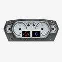
HDX-2200: Universal 6 Gauge Competition Analog HDX InstrumentsHDX-2200$1,825.00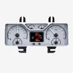
1940 Ford Car and 1940-47 Ford Truck HDX InstrumentsHDX-40F$1,625.00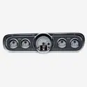
1965-66 Ford Mustang HDX InstrumentsHDX-65F-MUS$1,625.00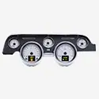
1967-68 Ford Mustang HDX InstrumentsHDX-67F-MUS$1,625.00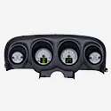
1969-70 Ford Mustang HDX InstrumentsHDX-69F-MUS$1,625.00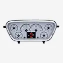
1953-55 Ford Pickup HDX InstrumentsHDX-53F-PU$1,625.00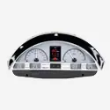
1956 Ford Pickup HDX InstrumentsHDX-56F-PU$1,625.00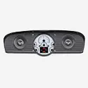
1961-66 Ford Pickup HDX InstrumentsHDX-66F-BRO$1,625.00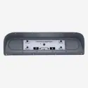
1967-72 Ford Pickup HDX InstrumentsHDX-67F-PU$1,625.00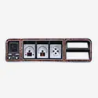
1973-79 Ford Pickup, 78-79 BroncoHDX-73F-PU$1,625.00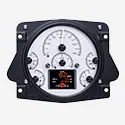
1966-77 Ford Bronco HDX InstrumentsHDX-66F-BRO$1,625.00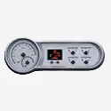
1953-54 Chevy Car HDX InstrumentsHDX-53C$1,625.00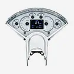
1955-56 Chevy Car HDX InstrumentsHDX-55C$1,625.00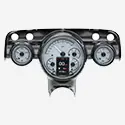
1957 Chevy Car HDX InstrumentsHDX-57C$1,625.00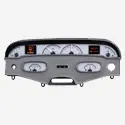
1958 Chevy Impala HDX InstrumentsHDX-58C-IMP$1,625.00 1959-60 Chevy Impala/ El Camino HDX InstrumentsHDX-59C-IMP$1,625.00
1959-60 Chevy Impala/ El Camino HDX InstrumentsHDX-59C-IMP$1,625.00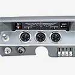
1961-62 Chevy Impala HDX InstrumentsHDX-61C-IMP$1,625.00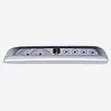
1963-64 Chevy Impala HDX InstrumentsHDX-63C-IMP$1,625.00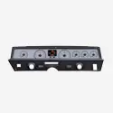
1971-76 Chevy Caprice/ Impala HDX InstrumentsHDX-71C-CAP$1,625.00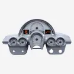
1958-62 Chevy Corvette HDX InstrumentsHDX-58C-VET$2,250.00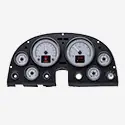
1963-67 Chevy Corvette HDX InstrumentsHDX-63C-VET$2,050.00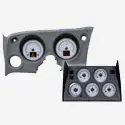
1968-77 Chevy Corvette HDX InstrumentsHDX-68C-VET$2,150.00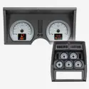
1978-82 Chevy Corvette HDX InstrumentsHDX-78C-VET$2,150.00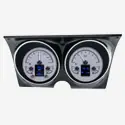
1967-68 Camaro/ Firebird HDX InstrumentsHDX-67C-CAM$1,625.00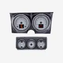
1967 Camaro with Console gauges HDX InstrumentsHDX-67C-CAC$1,725.00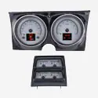
1968 Camaro with Console gauges HDX InstrumentsHDX-68C-CAC$1,725.00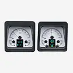
1969 Camaro HDX InstrumentsHDX-69C-CAM$1,625.00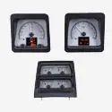
1969 Camaro with Console gauges, HDX InstrumentsHDX-69C-CAC$1,725.00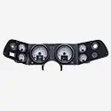
1970-81 Camaro HDX InstrumentsHDX-70C-CAM$1,625.00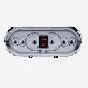
1963-65 Chevy Nova HDX InstrumentsHDX-63C-NOV$1,625.00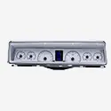
1966-67 Chevy Nova HDX InstrumentsHDX-66C-NOV$1,625.00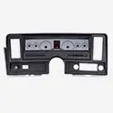
1969-76 Chevy Nova, 73-75 Buick Apollo, 75-76 Skylark, 73-76 Olds Omega, 71-76 Pontiac VenturaHDX-69C-NOV$1,625.00 1964-65 Chevy Chevelle/ Malibu/ El Camino HDX InstrumentsHDX-64C-CVL$1,625.00
1964-65 Chevy Chevelle/ Malibu/ El Camino HDX InstrumentsHDX-64C-CVL$1,625.00
Not sure what fits?
Talk to a tech in Sioux Falls, Monday to Friday, 8am to 5pm Central.